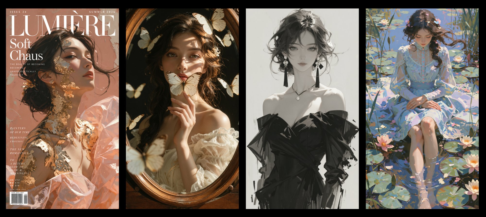
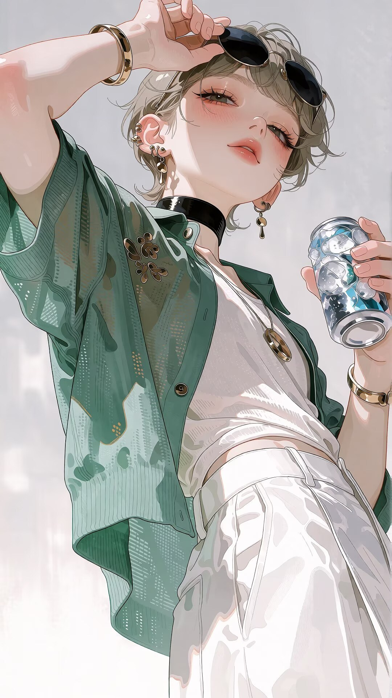
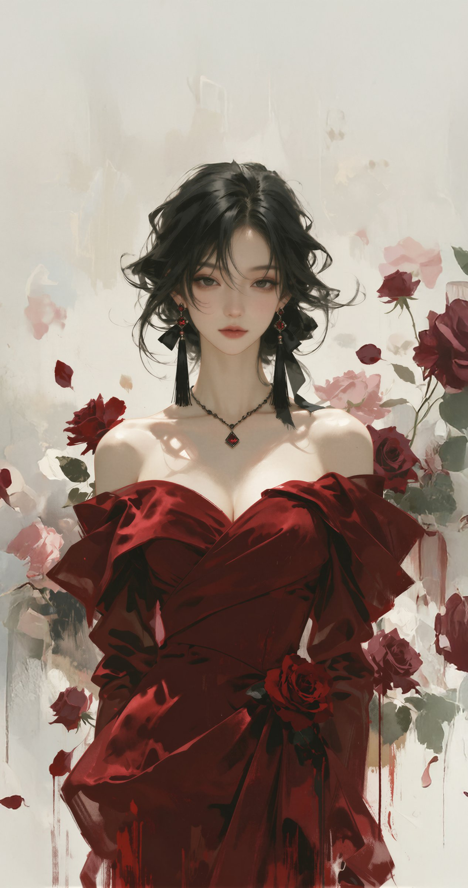
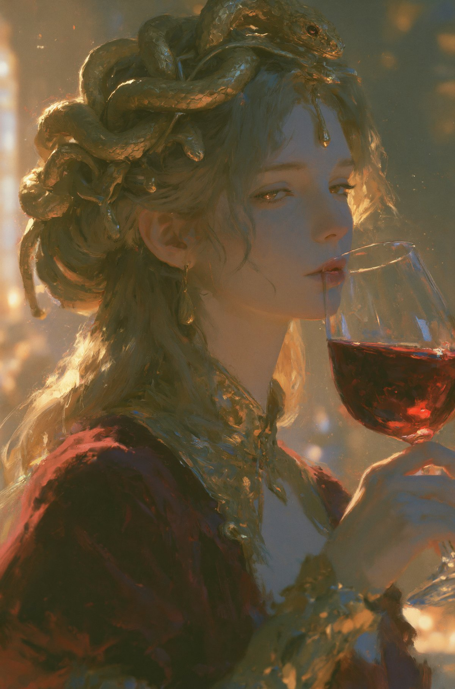
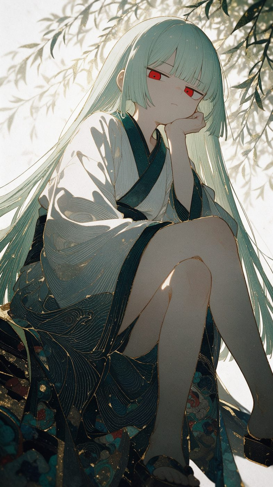
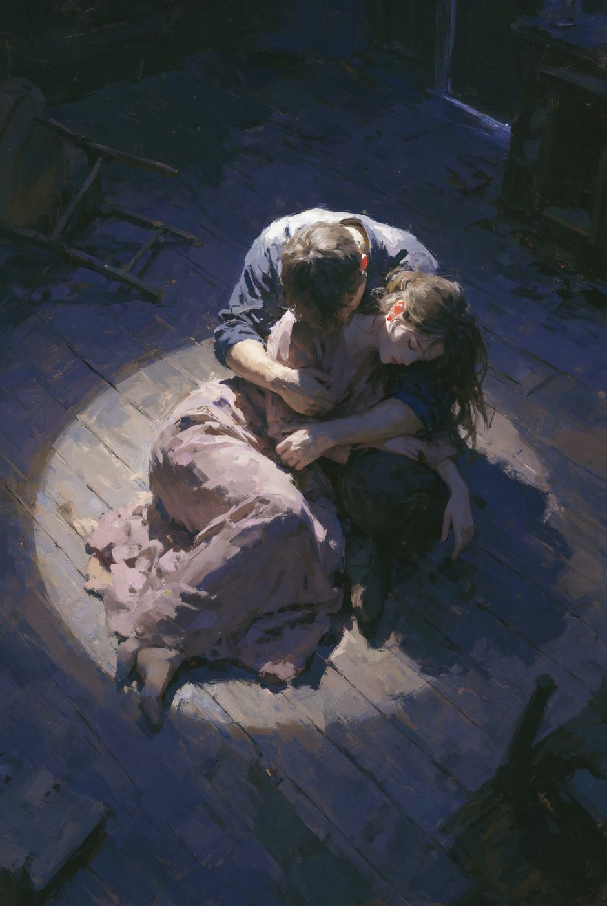
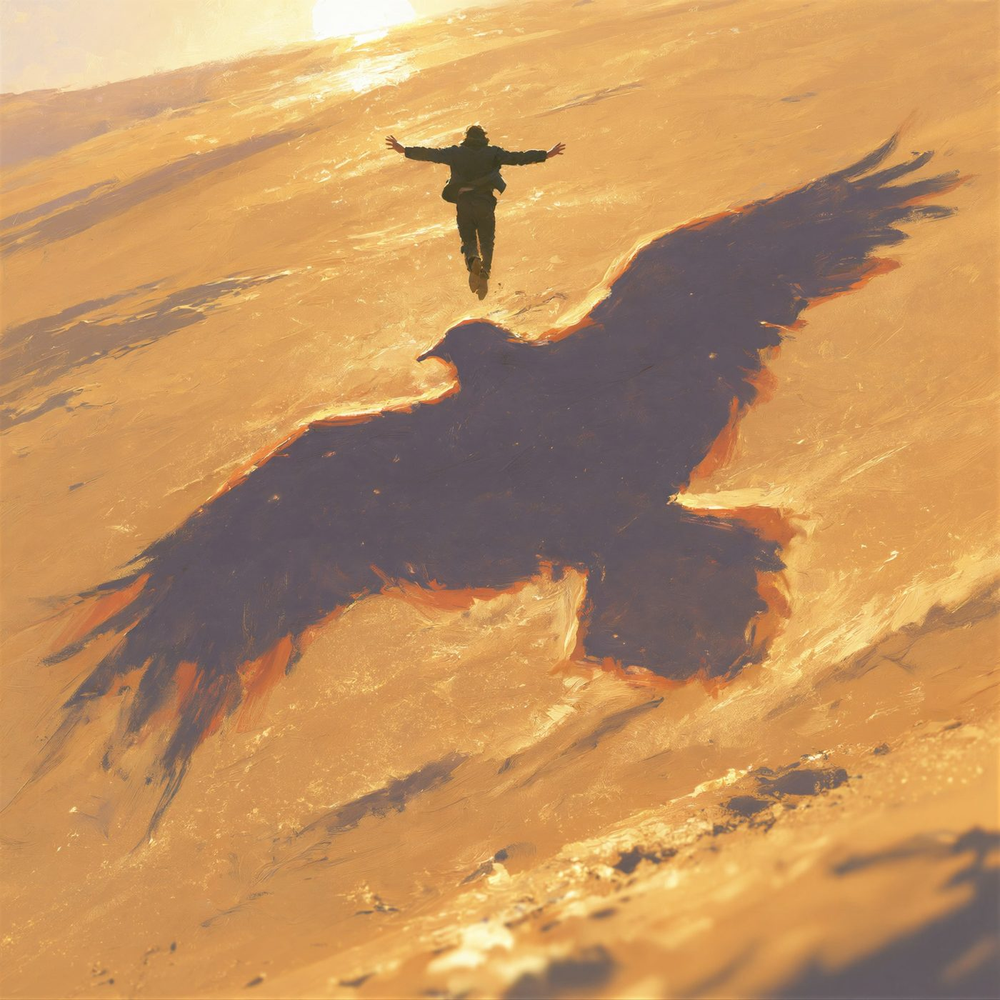
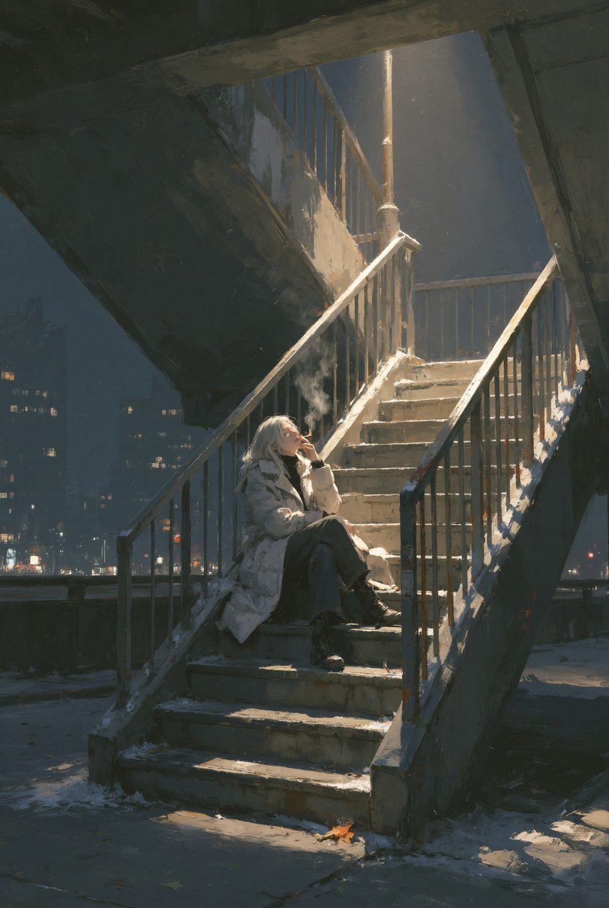

从四联时装大片到潮流人像，展示时尚视觉里最难的两件事：成组的调性统一，与单张的人物质感。这组作品覆盖杂志风四联、潮酷角色、情绪人像、油画质感四种风格，证明人物与时尚题材的表达跨度。
四联时装大片，统一的高级时装调性与版式语言，四张拼成一组完整的杂志跨页。难点不在单张出图，而在四张之间光线、色调、构图的高度统一——这是成组视觉的核心能力。

另外三张聚焦单人人像：潮酷墨镜女生、红裙与干燥花、油画举杯。三张分别对应潮流插画、情绪时尚、油画质感三种方向，展示人物题材的表达宽度。



| 作品 | 用途 | 分辨率 | 构图 / 风格 |
|---|---|---|---|
| LA LUMIÈRE PARIS | 四联时装大片 | 4647×2078（原图） | 横版四联 / 杂志高级时装 |
| 墨镜女生 | 潮流插画 | 1080×1920 | 竖版 / 潮酷时尚人像 |
| 红裙干燥花 | 情绪时尚海报 | 2160×4096 | 竖版 / 情绪色彩呼应 |
| 油画举杯 | 质感人像 | 1440×2176 | 竖版 / 油画笔触质感 |
四张拼成一组，任何一张的光线方向、色调温度、人物比例不一致都会破坏整体。先锁定一套视觉参数再逐张生成，而不是四张各抽各的再硬拼。
墨镜女生这类潮流人像的成败在细节：发型层次、材质反光、神态。这些是区分「能看」与「专业」的分水岭，必须靠局部控制而不是整体提示词。
红裙与干燥花用色彩呼应建立情绪，不靠表情硬演。油画举杯则用材质笔触营造质感——不同题材用不同的情绪载体，而不是一套公式套到底。
游戏视觉岗位常需要角色立绘、宣传海报与时尚化的美术表达。这组证明我不仅能做场景 KV，也能处理人物与质感这类高难度题材。
四张同风格的人物作品，覆盖森系角色、雪地情绪、概念剪影与楼梯光影——都是人物与质感能力的不同面向，展示同一套方法论下的表达宽度。



